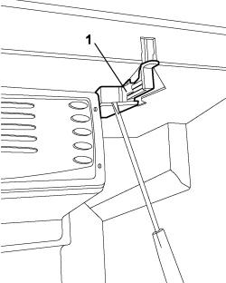
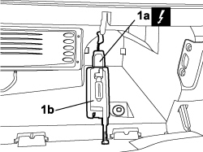

7040G20 BULB HOLDER FOR COMPARTMENT LIGHTING IN DASHBOARD - R.R.
- Path
- Procedures > 70 FITTINGS > 7040 BODY INTERIOR FITTINGS AND TRIM > 7040G VEHICLE COMPARTMENT LIGHTING SYSTEM > 7040G20 BULB HOLDER FOR COMPARTMENT LIGHTING IN DASHBOARD - R.R.
- Kind
- repair procedure (removal / refitting; the operation number is the code)
- Applies to
- all engines; all production periods
- Interactive page
- https://sloeber94.github.io/elrnDB-fCrm/en/#/194001059
Applies to: all engines; all production periods
 Removing
Removing
 Refitting
Refitting- Turn the ignition key to the OFF position.
- Open the bonnet.
- Disconnect the negative battery terminal.
Description | Connector | |
|---|---|---|
BATTERY |
1. Working on board the vehicle from the passenger side, open the compartment in the dashboard using a suitable size screwdriver and release the bulb holder from the compartment without removing it.

Applies to: all engines; all production periods
1. Disconnect the electrical connection (1a) and remove the bulb holder (1b) for the dashboard compartment light.
Description | Connector | |
|---|---|---|
1a | COMPARTMENT LIGHT |

Applies to: all engines; all production periods
Refitting
Removing- Check the dashboard competment light bulb holder is not damaged.
- Connect the electrical connection to the dashboard compartment light bulb holder.
Description | Connector | |
|---|---|---|
COMPARTMENT LIGHT |
- Fit the bulb holder in its housing inside the dashboard compartment.
- Connect the negative battery terminal.
Description | Connector | |
|---|---|---|
BATTERY |